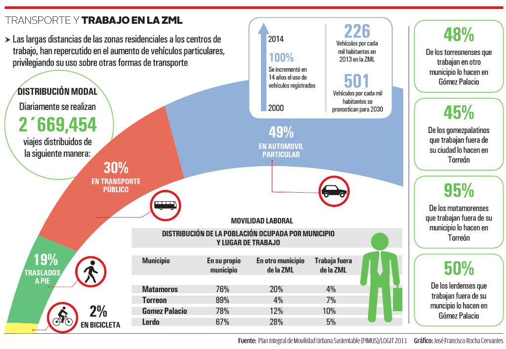

La Zona Metropolitana de La Laguna es una región interconectada donde diariamente se realizan 2 millones 669 mil 454 viajes, distribuidos casi la mitad de ellos en automóvil particular y sólo 30% en transporte público. Todo esto, aunado al crecimiento de la mancha urbana ha ocasionado una baja densidad poblacional, abandono de zonas residenciales, aumento de distancias y mayores costos en traslados y en los servicios públicos.
Se entiende por movilidad la capacidad que tienen las personas y las mercancías de moverse dentro y fuera de las ciudades, considerando tres modos de transporte: vehículo privado, transporte público y transporte mercantil.
La problemática principal de la movilidad en la Comarca Lagunera, reside en la expansión de la mancha urbana, lo que ha presionado a la estructura vial a tal grado que se ha privilegiado el uso del automóvil particular.
El uso de vehículos motorizados ha aumentado a un ritmo mayor y al incrementarse las distancias y la cantidad de vehículos, aumentan los efectos negativos del uso de los automotores, como son:
- El incremento del consumo energético.
- La contaminación atmosférica y sonora.
- Disminución de la seguridad vial.
- Exclusión social.
- Efectos negativos sobre la salud.
- Ocupación creciente del espacio
- El efecto barrera en la ciudad y
- La generación de costes externos.
Este escenario resulta insostenible e inequitativo para los segmentos de población que no cuenta con vehículo.
Movilidad laboral entre municipios
En la ZML las necesidades de traslado de la población de una ciudad a otra son cotidianas, ya sea por cuestiones de vivienda, trabajo, consumo, educación y oferta cultural, entre otras.
La proporción de personas que trabajan y viven en el mismo municipio muestra que los municipios de la ZML, exceptuando a Torreón, no tienen la capacidad de ofrecer fuentes de trabajo al total de su población, lo cual se compensa con la interacción entre las demás ciudades.
Observamos que Torreón, al situarse en la zona céntrica de la ZML beneficia a los municipios colindantes, ya que 48% de los torreonenses que trabajan en otro municipio lo hacen en Gómez Palacio y 45% de los gomezpalatinos que trabajan fuera de su ciudad lo hacen en Torreón.
Por su parte Lerdo, al ubicarse a mayor distancia tiene un mayor porcentaje de población ocupada que trabaja en otro municipio, similar a Matamoros, aunque más acentuada.
¿Qué se propone?
En el 2013, se elaboró el Plan Integral de Movilidad Urbana Sustentable (PIMUS) de la Laguna el cual es un instrumento de planeación urbana que centra sus esfuerzos en resolver la problemática de movilidad de la ZML a través de 5 estrategias generales: Crecimiento ordenado, controlado y compacto; priorizar modos no motorizados de transporte; desarrollo de un sistema de transporte público integrado; y gestión integral de la movilidad.
Como proyecto prioritario, el PIMUS propone el desarrollo de un corredor de transporte masivo integral BRT (Bus Rapid Transit) conocido como “Metrobus”, el cual consiste en un sistema de transporte público que pretende lograr la eficiencia, rendimiento y calidad de un sistema de metro o tren ligero, con la flexibilidad costo y simplicidad de un sistema de autobuses.
El sistema tiene 4 características principales: autobuses de gran capacidad, carriles exclusivos (o prioritarios) para autobuses, estaciones o paradas fijas con plataformas y pago de la tarifa fuera del autobús. Todas estas condiciones permiten que el sistema tenga una eficiencia mucho mayor a un sistema de autobuses tradicional.
Otras líneas estratégicas propuestas por el PIMUS son la priorización de modos no motorizados de transporte y la racionalización del tránsito y vialidad. En este sentido, el IMPLAN desarrolla actualmente proyectos de pacificación del tránsito, calles completas y el Plan Director de Movilidad no Motorizada.
En conjunto, estas acciones pretenden desarrollar un sistema de movilidad urbana que integre a los modos no motorizados de transporte dentro de la movilidad cotidiana, contribuyendo en el desarrollo de una región accesible, compacta y sustentable a través de acciones en infraestructura, normatividad, programas de fomento, educación y seguridad vial.
Por otra parte, colectivos ciudadanos ciclistas lograron que Torreón fuera el primer municipio en adoptar de manera oficial el principio “Visión Cero”, el cual se basa en la premisa que todos los accidentes (siniestros) de tránsito son prevenibles y sus tasas de muertes y lesiones graves por violencia vial deben disminuir a cero. A través de un correcto diseño de vialidades, aplicación de reglamentos, pacificación del tránsito, calles completas y modificación de vehículos, se pretende elevar la seguridad vial en las calles de la ciudad.
Infografía
